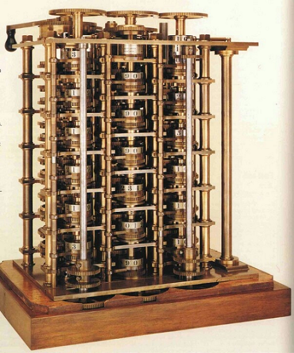

|  |
Charles também trouxe o conceito da primeira memória RAM, ou seja, um dispositivo capaz de armazenar dados temporários para trabalhar no futuro. O conceito da máquina se chamava Difference Engine (Máquina Diferencial, em inglês), e usaria rodas dentadas para apresentar os cálculos. Enquanto a Máquina Diferencial ainda era considerada um conceito de computador mecânico, a Analytical Engine (Máquina Analítica, em inglês) já trazia semelhanças com o que vemos em computadores da atualidade. Por meio de instruções enviadas por cartões perfurados, a máquina seria capaz de realizar cálculos mais complexos do que o conceito anterior. Só que tanto a Máquina Diferencial quanto a Máquina Analítica não foram reconhecidas como os primeiros computadores por conta de um simples fato: elas não foram produzidas ou construídas, foram apenas idealizadas. Ainda assim, foi a Máquina Analítica que serviu de base para os computadores como os conhecemos hoje. Inclusive, o método de inserir comandos e requisições de cálculo por meio de cartões perfurados se tornaria uma realidade no futuro e perduraria por muitos anos, mas seu conceito não foi criado por Babbage, mas sim de Ada Lovelace. Essa ideia foi inspirada na máquina de tear de Jacquard, que usava esses cartões para criar padrões nos tecidos trabalhados na máquina. A ideia fez com que o conceito da Máquina Analítica não se limitasse aos números, como pensada originalmente, mas permitiria a ela também criar imagens. Ou seja, antes mesmo de o primeiro computador existir, Ada Lovelace já pensava no dispositivo como uma ferramenta multifuncional. Todos esses dispositivos criados desde então são resultado de melhorias. Em outras palavras, se um dispositivo falhou em realizar uma determinada tarefa, outro dispositivo foi criado para atender às suas necessidades. Este desenvolvimento não foi um processo tão rápido como é hoje, pois os recursos eram mais limitados na época. Nas ciências tradicionais como Filosofia, Matemática, Física e Biologia, há numerosos estudos históricos e monografias sobre pensadores e inventores de diversas grandezas. No entanto, na Computação, é necessário produzir trabalhos que sirvam de base para estudantes e pesquisadores interessados nos aspectos teóricos dessa tecnologia predominante. A História da Computação é caracterizada por interrupções e mudanças inesperadas, o que torna difícil entender sua evolução apenas por uma enumeração linear de invenções e datas. Compreender como os trabalhos de certos indivíduos influenciaram o desenvolvimento da Computação e o impacto desses atos é um dos principais objetivos deste estudo histórico. |